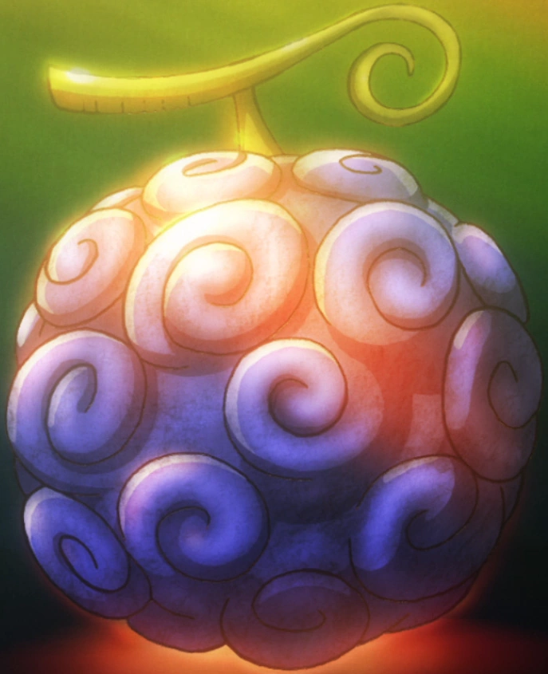
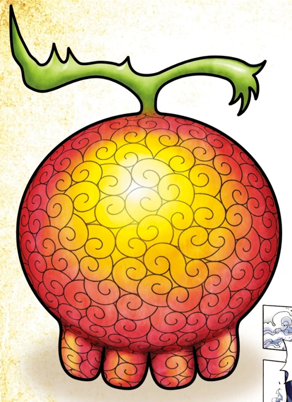
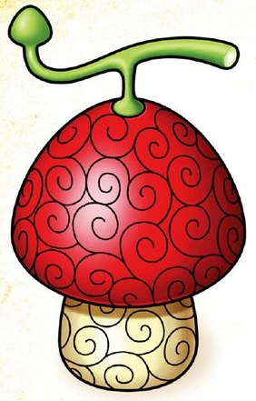
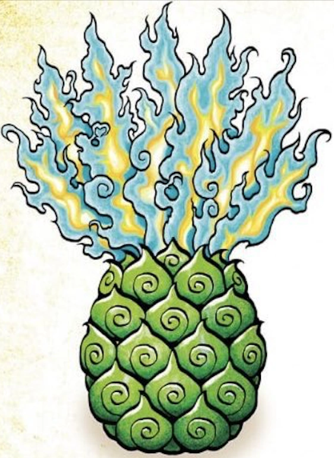
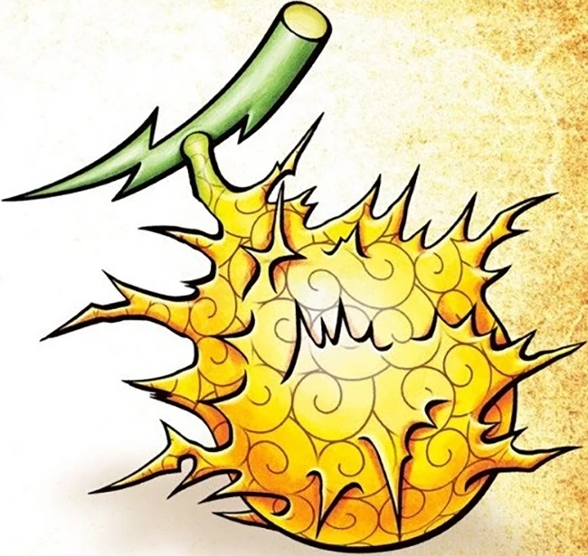
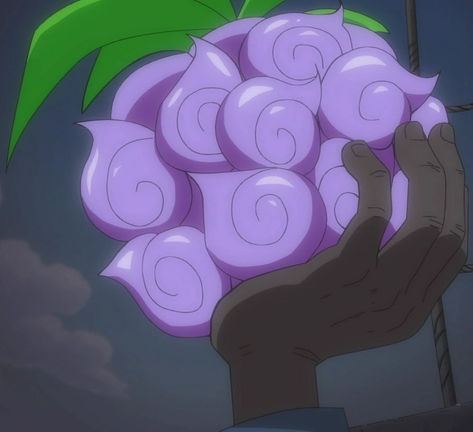

Энциклопедия Дьявольских Плодов
Дьявольские плоды — это мистические фрукты, дарующие съевшему их уникальные сверхчеловеческие способности взамен на потерю возможности плавать. Они делятся на три основных типа.
Парамеция

Плод Резина-Резина (Гому Гому но Ми)
Владелец: Монки Д. Луффи. Превращает тело пользователя в резину, позволяя ему растягиваться и поглощать физические удары.

Плод Жизнь-Жизнь (Ёми Ёми но Ми)
Владелец: Брук. Дарует возможность возрождения, позволяя душе пользователя вернуться из мира мертвых обратно в тело.
Зоан

Плод Человек-Человек (Хито Хито но Ми)
Владелец: Тони Тони Чоппер. Позволяет животному превращаться в человека или получеловека, наделяя его человеческим разумом.

Плод Птица-Птица, модель: Феникс (Тори Тори но Ми)
Владелец: Марко. Редчайший мифический зоан. Позволяет превращаться в объятого синим пламенем феникса и мгновенно залечивать раны.
Логия

Плод Гром-Гром (Горо Горо но Ми)
Владелец: Энель. Позволяет пользователю создавать, контролировать и превращаться молнию по желанию.

Плод Тьма-Тьма (Ями Ями но Ми)
Владелец: Маршалл Д. Тич. Уникальная логия, позволяющая управлять гравитацией тьмы и поглощать чужие силы.